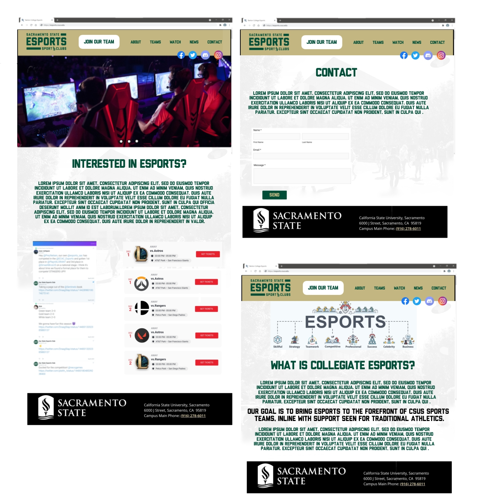

The Esports club of Sacramento State University is an "Electronic Sports" club that hosts both casual and competitive video game events.
The club is meant for bringing together students that are just interested in video games as well as those who want to compete in gaming leagues and tournaments.
Our clients for this project are Julia Barge, the president, and Sean Tirado, the treasurer, of the Sacramento State University Esports Club
The problem that was proposed was to create a site for the the expanding esports club to manage growth and add professionalism to the club.
The project scope is to give users the ability to see events, team pages, watch live games, and to contact the esports club.
Which parts of the business problem will be addressed?
The goal of the project is to have a way to store team members of each team, keep track of dates for events, be able to contact the esports club, and to watch broadcasted games.
To solve the given problem:
Our project is advancement for the Esports of Sacramento State University. Allowing the club to expand on campus while adding
professionalism. The website will give outreach for currently admitted members as well future Esports club members. With the new
webpage both members and nonmembers will be able to access information about the club quickly and efficently.

This is a link to our video of the project demo: Click me!